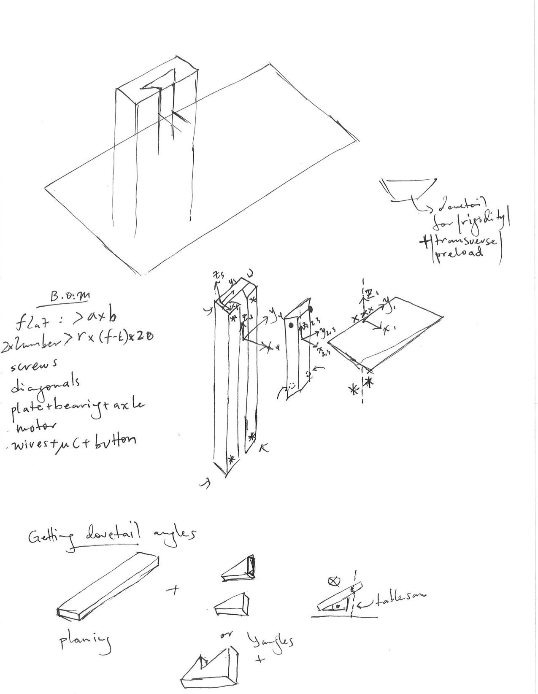
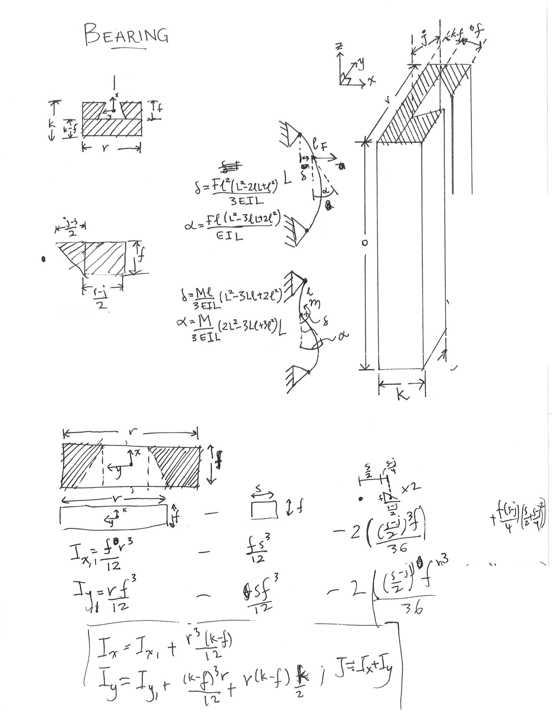

Transformable Desk
Abstract
This is the design/manufacturing/reiterating of a desk capable of transforming for a standing and sitting user. The whitepaper can be accessed here and the design report here. In the strategizing phase, three ideas were analyzed: floor-based, desktop and wall-mounted desk. The wall mounted desk was chosen to be the final strategy to be pursued.
Design
Basic functional requirements were created and a preliminary error budget was created. This specified error and expected loading was used to generate required stiffnesses of different components: first-order-calculations.xlsx.
After analyzing different strategies and concepts, a wall-mounted desk was settled upon. To reduce the weight of the table while increasing it's stiffness, diagonals were included from the front corners of the flats to the base of the slider.
| Functional Requirements | Design Parameters | Analysis | References | Risks | Counter-Measures |
|---|---|---|---|---|---|
| Electronically actuated | Stepper motor and leadscrew design | Torque, power analysis | PMD, datasheets | Cables, Connections | Cable ties, proper fastening |
| Support weight of items and person | Be able to handle 200N | Bearing and structure mechanics | PMD, Material Properties | ~ | ~ |
| Two positions | Two resting positions | Controls, Mechanics | PMD, Datasheets | ~ | ~ |
| Little deflection | Decrease error and deflections | Beam-bending, compliance analysis | Euler-Bernoulli Beam Theory, PMD | Increased weight, cost | Use better geometry and exercise wisdom |
| Within budget | Cost less than $100 | Recycle/Re-used materials | Re-use material sites, McMaster, Amazon | Might get inferior items | Exercise caution and wisdom |
A dovetail design was selected for the slider. The angle of the slider combined with the gravity preload will give the system lateral stiffness. For a boxway system, cuts can be made to create a double-cantilever spring for preloading. This also allows for a graceful failure: the thickness of the sections can be claculated such that spring will break and jam the system in case of excess loading. The position of the smaller spring is switched on the bottom half due to the direction of displacement. A similar method could be implemented at the expense of additional complexity.
The dovetail has a slot for the nut of the leadscrew. To prevent overconstraint, it is only constrained in the lateral direction.
A downloadable version of the CAD can be accessed here or access the full model on Onshape.
First Order Calculations
Hand written notes on calculations can be accessed through the tabs below. These are the calculations that went into the error apportionment spreadsheet. They are used as a first order estimation for sizing and errors. A final FEA will be run to full model the stress and deformations in the final structure. The final error apportionment spreadsheet can also accessed here.
Sketches
The diagonals and flat are given a simple cross section for first order calculations. A more accurate model can be created by resolving the forces in axial and normal components, and superpositioning them.
The bearings will be constructed with angle cuts and adhered with glue.
The primary concern was the slider forcing out of bearing. The keepers on the bearing was made more square the reduce bending and angular deflection. The dimensions of the bearings were chosen such that the angular deflection and the extension of the bearing is within allowable bounds.
Engineering drawings used in manufacturing are below. The combined document can also be accessed here.
Manufacturing
Bill of Materials
The lumber was purchased from a local Home Depot and the electronics from the local Microcenter. Most of the hardware was ordered online from McMasterCarr.
| 1 | 2 x 8 Fir Lumber [8 ft] | $6.49 |
|---|---|---|
| 1 | 2'x 4' Plywood [1/4"] | $10.22 |
| 1 | Microcontroller | N/A |
| 1 | Motor Controller | $20.00 |
| 1 | Stepper Motor | $30 |
| 1 | Powersupply | $10 |
| 1 | Leadscrew | $18.97 |
| 2 | Spider Coupling | $7.56 |
| 1 | Rubber Intermediate | $2.47 |
| 1 | Wood screws | N/A |
| 1 | Fasteners | N/A |
| 4 | Bearings | $27.60 |
| 1 | Wood Glue | $8 |
Table
This is the flat surface of the desk. The 2'x 4' piece of plywood is cut into 3 pieces. These pieces are glued and then clamped to maintain the force necessary for the glue.
Slider and Carriage
The lumber was first be planed for flatness. In order to cut the angles needed by the dove-tails, a table saw was used, setting the blade to the appropriate angle. The error from this process will be included in the final readjustment of the error budget and the reiteration process. The sliders and bearings were cut at the same session to minimize fabrication error.
The first keeper was clamped and glued to create the bearing. The mid-cut was inserted with a pieces of paper between the angles of the mid-cut and bearing to ensure tight tolerance. The second keeper was then glued to the bearing and clamped; it will clamped to the bearing and to the slider to ensure the right tolerance.
Diagonals
Based on the pre-calculated angles, the table saw was adjusted and the diagonals were cut. They were then screwed into the carriage and the table. The lateral piece was also added to the base of the desk and carriage.
Leadscrew
Both ends of the leadscrew were turned down in according to the design. The feedspeed was adjusted in order to increase the overall accuracy of the manufacturing process.
Motor Mount
The motor mount was made from a piece of lumber. It will be aligned and screwed to the bottom of the bearing. The spider coupling used should be able to handle any misalignment.
Bearings block
The bearing blocks were created from the center cut piece of wood in order to use part-matching to minimize errors. Following the drawings, the blocks were made ensureing that the bearings fit appropriately in them.
Characterization
Summary
The final model was aestitically pleasing. The table is very rigid, thanks to choices made involving diagonals, table thickness and the lateral piece.
Issues
Bent Leadscrew: The leadscrew had a bend it in that caused the carriage to precess when actuated. This can't easily be rectified but proper tolerancing on the carriage will reduce the effect at the tip of the table.
Improper Tolerance: Most likely due to improper clamping, there was a gap between the carriage and the sides of the bearing, larger than the predefined error.